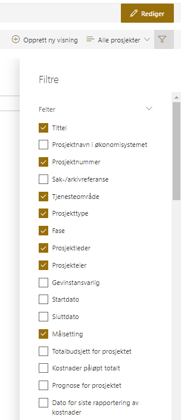

I den øverste linjen finner du gruppering-, eksportering-, visning-, og filtermuligheter.
- A) Trykk på Eksporter til Excel for å eksportere den visningen du har valgt til et Excel-ark som automatisk lastes ned til datamaskinen din.
-
B) Trykk på for å opprette ny visning.
- C) Trykk på Alle prosjekter for å velge andre visninger som Porteføljestatus, Mine prosjekter og Økonomi. Her vises også eventuelle tilpassede visninger som er opprettet for denne porteføljen.
- D) Trykk på
 for å velge flere felter å vise. Her kan du også angi et eller flere felter som du ønsker å filtrere på.
for å velge flere felter å vise. Her kan du også angi et eller flere felter som du ønsker å filtrere på.

Bruk søkefeltet for å filtrere listen på ønskede nøkkelord.
Her vises informasjon om prosjektene på bakgrunn av visningen du har valgt. Trykk på tittelen til et prosjekt for å gå til prosjektrommet.